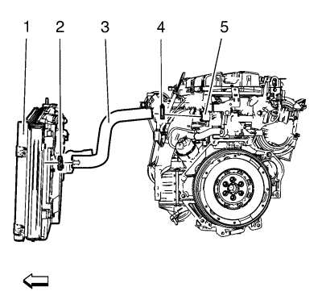

Sustitución del termostato de refrigerante del motor — 1.6L LDE, LXV, LLU, 1.8L 2H0 y LUW
Procedimiento de desmontaje
Precaución:Consulte Precaución con la carcasa del termostato del refrigerante del motor en la sección Prólogo.
- Elevar el vehículo y soportarlo de manera segura. Consultar Elevación y soporte en alto del vehículo .
- Coloque un recipiente colector debajo del vehículo.
- Vacíe el sistema de refrigeración. Consultar Drenaje y llenado del sistema de refrigeración .

- Afloje la abrazadera del tubo flexible de entrada del radiador (4).
- Desmonte el tubo flexible de entrada del radiador (3) del termostato de refrigerante del motor (5).
- Quite los 4 tornillos (3) del termostato del refrigerante del motor.
- Quite el conjunto del termostato del refrigerante del motor (2).
- Desmonte la junta del refrigerante del motor (1).
Procedimiento de montaje
- Limpie las superficies de sellado del refrigerante del motor.
- Monte la junta del refrigerante del motor (1).
- Monte el conjunto del termostato del refrigerante del motor (2).
Precaución:Consulte Precaución con las fijaciones en la sección Prólogo.
- Monte los 4 tornillos del termostato de refrigerante del motor (3) y apriételos a 8 N·m (71 lib. pulg.).
- Monte el tubo flexible de entrada del radiador (3) en el termostato de refrigerante del motor (5).
- Monte la abrazadera del tubo flexible de entrada del radiador (4).
- Bajar el vehículo.
- Llene el sistema de refrigeración. Consultar Drenaje y llenado del sistema de refrigeración .
| © Copyright Chevrolet. All rights reserved |